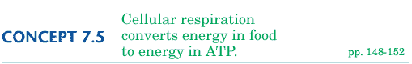

|
|
|
|
|
 Objectives
Key Terms While the above sentence summarizes the outcome of cellular respiration, the process actually consists of more than two dozen chemical reactions. Many of the reactions take place in specialized organelles—mitochondria. Structure of Mitochondria
A Road Map for Cellular Respiration Figure 7-16 is a simplified "road map" of cellular respiration. You can use the diagram to follow glucose through the metabolic pathway of cellular respiration. The three main stages are color-coded: glycolysis (green), the Krebs cycle (purple), and electron transport and ATP synthase (gold). The road map also shows where in your cells each stage occurs. Stage I: Glycolysis
Using two ATP molecules as an initial "investment," the cell splits a six-carbon glucose molecule in half. The result is two three-carbon molecules, each with one phosphate group. Each three-carbon molecule then transfers electrons and hydrogen ions to a carrier molecule called NAD+. Accepting two electrons and one hydrogen ion converts the NAD+ to a compound called NADH. (The yellow dots in the NADH symbols represent electrons.) The next step is the "payback" on the ATP investment—four new ATP molecules are produced, a net gain of two ATP molecules. In summary, the original glucose molecule has been converted to two molecules of a substance called pyruvic acid. Two ATP molecules have been spent, and four ATP molecules have been produced. The pyruvic acid molecules still hold most of the energy of the original glucose molecule. Stage 2: The Krebs Cycle Recall that glycolysis takes place outside the mitochondrion and produces two pyruvic acid molecules. These pyruvic acid molecules do not themselves take part in the Krebs cycle. Instead, after diffusing into the mitochondrion, each three-carbon pyruvic acid molecule loses a molecule of carbon dioxide. The resulting molecule is then converted to a two-carbon compound called acetyl coenzyme A, or acetyl CoA. This acetyl CoA molecule then enters the Krebs cycle, as shown in Figure 7-18. In the Krebs cycle, each acetyl CoA molecule joins a four-carbon acceptor molecule. The reactions in the Krebs cycle produce two more carbon dioxide molecules and one ATP molecule per acetyl CoA molecule. However, NADH and another electron carrier called FADH2 trap most of the energy. At the end of the Krebs cycle, the four-carbon acceptor molecule has been regenerated and the cycle can continue.
As you have read, glycolysis produces two pyruvic acid molecules from one glucose molecule. Each pyruvic acid molecule is converted to one acetyl CoA molecule. Since each turn of the Krebs cycle breaks down one acetyl CoA molecule, the cycle actually turns twice for each glucose molecule, producing a total of four carbon dioxide molecules and two ATP molecules. Stage 3: Electron Transport Chain and ATP Synthase Action First, the carrier molecule NADH transfers electrons from the original glucose molecule to an electron transport chain (Figure 7-19). As you read in Concept 7.4, electrons move to carriers that attract them more strongly. In this way the electrons move from carrier to carrier within the inner membrane of the mitochondria, eventually being "pulled" to oxygen at the end of the chain. There the oxygen and electrons combine with hydrogen ions, forming water. Each transfer in the chain releases a small amount of energy. This energy is used to pump hydrogen ions across the membrane from where they are less concentrated to where they are more concentrated. This pumping action stores potential energy in much the same way as a dam stores potential energy by holding back water. The energy stored by a dam can be harnessed to do work (such as generating electricity) when the water is allowed to rush downhill, turning giant wheels called turbines. Similarly, your mitochondria have protein structures called ATP synthases that act like miniature turbines. Hydrogen ions pumped by electron transport rush back "downhill" through the ATP synthase. The ATP synthase uses the energy from the flow of H+ ions to convert ADP to ATP. This process can generate up to 34 ATP molecules per original glucose molecule.
Adding Up the ATP Molecules
Glycolysis produces four ATP molecules, but recall that it requires two ATP molecules as an initial energy investment. So the result is a net gain of two ATP molecules. The Krebs cycle produces two more ATP molecules (one for each three-carbon pyruvic acid molecule). And finally, the ATP synthase turbines produce about 34 more molecules of ATP. Notice that most ATP production occurs after glycolysis and requires oxygen. Without oxygen, most of your cells would be unable to produce much ATP. As a result, you cannot survive for long without a fresh supply of oxygen.
Concept Check 7.5
|